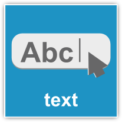
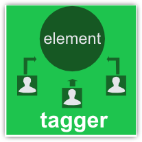

L'ambiente ti da la possibilità di inserire diversi widget che andranno a fornire a te e a chi userà la tua applicazione diverse funzionalità. Clicca su un widget per aprirne il manuale corrispondente
